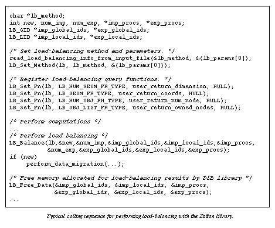

Load-Balancing Example
An example of the typical calling sequence for load balancing using Zoltan
in a finite element application is shown in the figure
below. An application first selects a load-balancing algorithm; in the
example, the choice of algorithm and its parameters are read from an application
input file and sent to the load-balancing library through a call to LB_Set_Method.
Appropriate query functions are then registered with the load-balancing
library through a series of calls to LB_Set_Fn.
In the example, a geometric algorithm, such as RCB, is assumed. Application
query functions returning lists and coordinates of nodes of the finite
element mesh are registered. After some computation, load balancing is
invoked by calling LB_Balance.
The results of the load balancing include the number of nodes to be imported
and exported to the processor, lists of global and local IDs of the imported
and exported nodes, and source and destination processors of the imported
and exported nodes. The return value of LB_Balance
is tested to see whether the new decomposition differs from the old one.
If the decompositions differ, some sort of data migration is needed to
establish the new decomposition; the details of migration are not shown
in this figure but will be addressed in the
migration examples. After the data migration
is completed, the arrays of information about imported and exported nodes
returned by LB_Balance
are freed by a call to LB_Free_Data.

[Table of Contents |
Next: Migration Examples
| Previous: Initialization
Example]